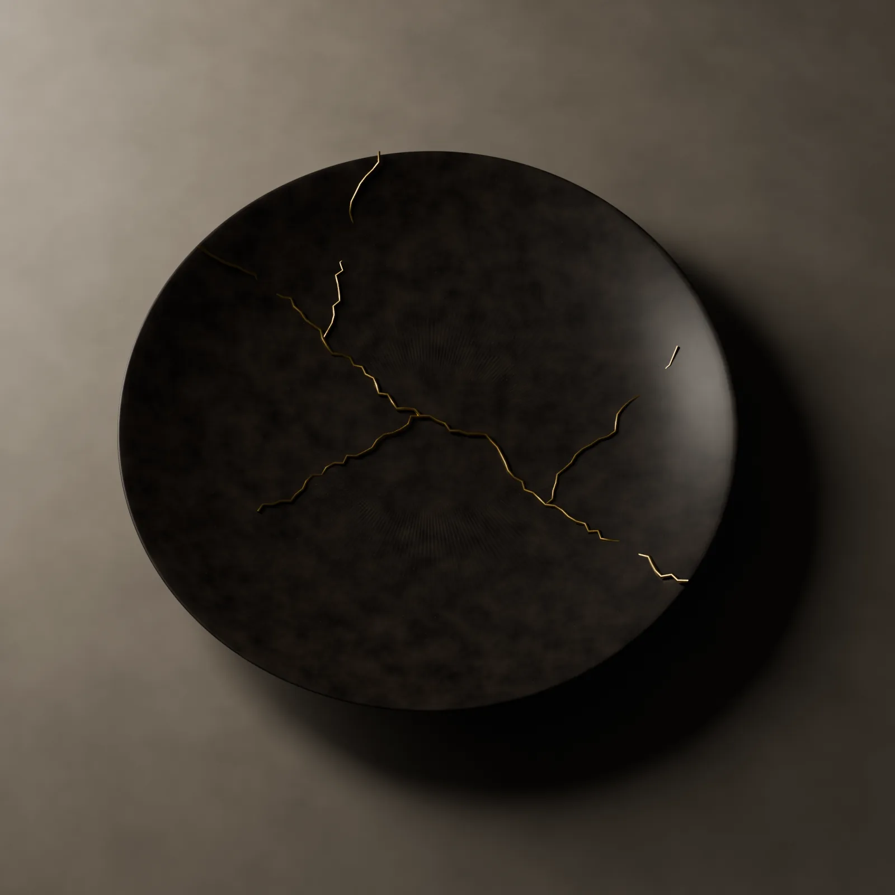

店と料理人
八つの席と、
ひとりの料理人。
入口の扉を閉めると、街の音が消えます。席に着くと、障子の明かりと、炭の匂いだけが残ります。

料理人
水無瀬 朔
みなせ さく
- 1984
- 山あいの農家に生まれる
- 2003
- 京都の料亭に入る。十二年修業する
- 2015
- 全国の産地を二年かけて回る
- 2018
- 五日を開く
祖母の家の壁に、暦が掛かっていました。
畑に出る日も、味噌を仕込む日も、祖母はその暦で決めていました。料亭で修業を始めて十年が過ぎたころ、献立の季節が月単位でしか動いていないことに気づきました。畑は、そんなにゆっくりではありません。
店を開く時に決めたことは二つです。献立を五日で替えること。そして、席を八つより増やさないこと。ひとりで目が届き、手が届くのは八席までだからです。

器
割れた皿も、
店の一員です。
開店の年に割れた皿があります。作家に相談し、金で継いでもらいました。今では焼物を盛る、いちばん出番の多い皿です。
椀は輪島の塗師に、盃は錫の職人に頼みました。使い込むほどに手に馴染みます。
届けてくれる人
献立は、畑と海から
電話で決まります。
- 米
- 新潟の棚田の農家
- 魚
- 若狭と明石の漁師
- 野菜
- 京都の山あいの畑
- 炭
- 紀州の炭焼き職人
- 昆布
- 利尻の昆布を蔵で寝かせたもの
- 水
- 丹波の湧き水を毎週運ぶ
席は八つです。
ご予約は毎月一日の正午から。翌々月までの席をお受けします。
席を予約する